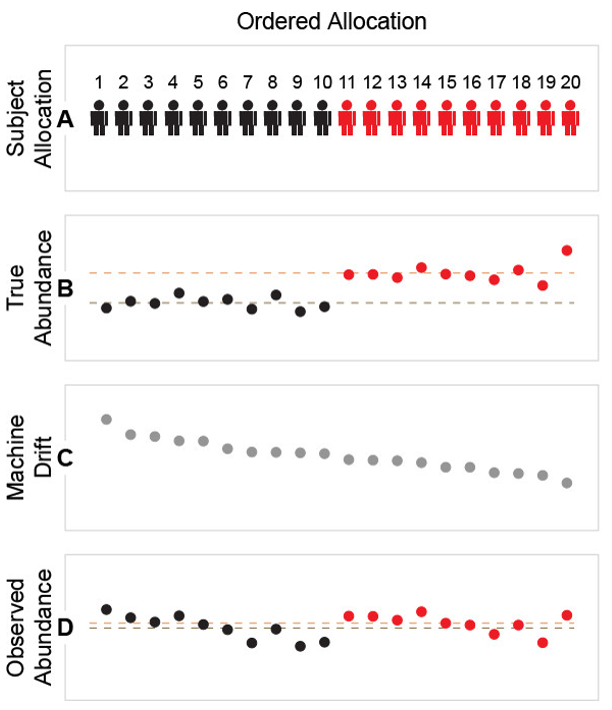
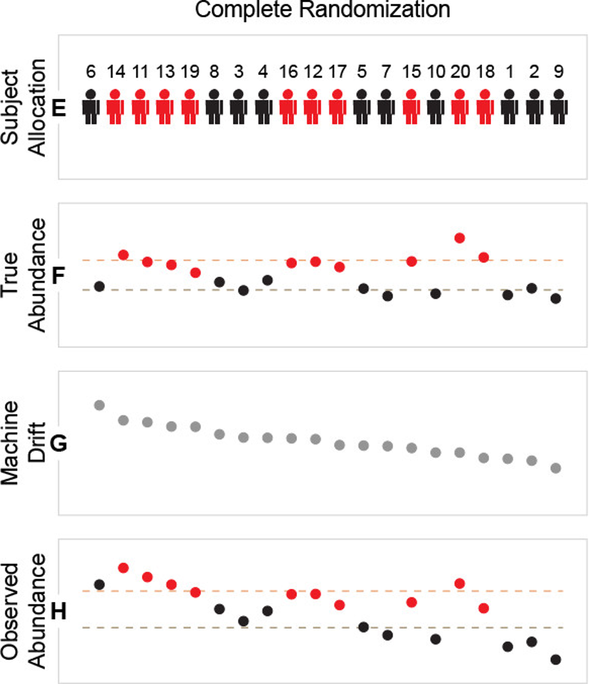
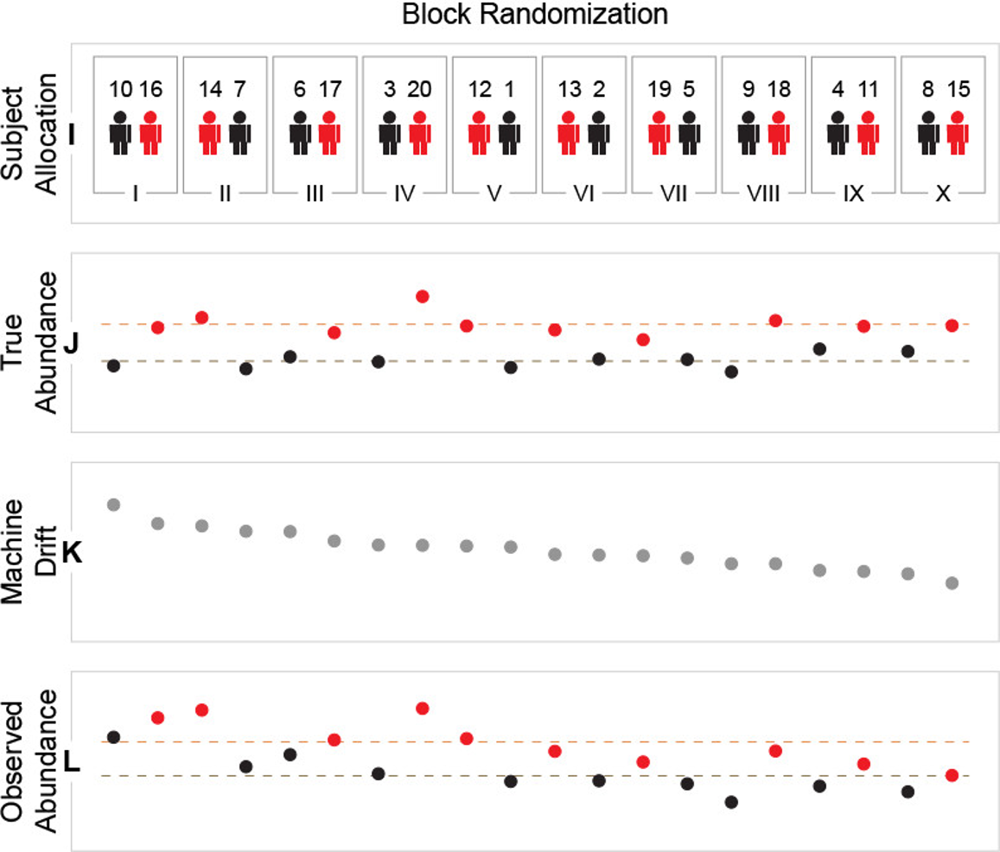
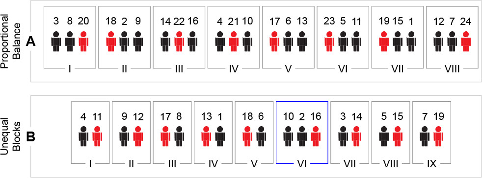
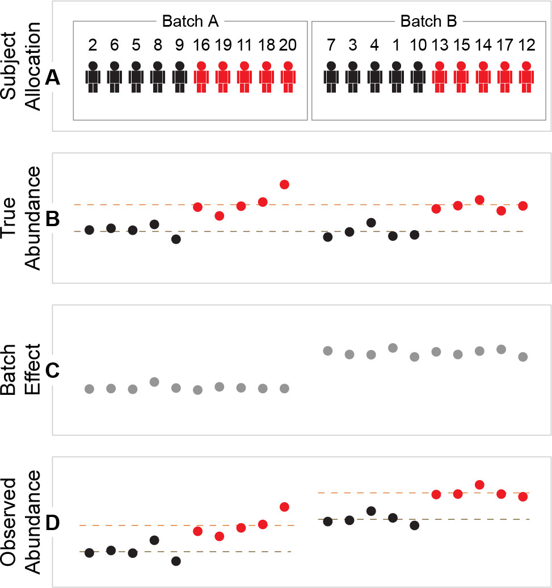

Randomization¶
Randomization is a core element of experimental design. In LC–MS metabolomics/lipidomics it helps ensure that systematic technical effects (e.g., instrument drift, column aging, carryover, temperature changes, operator effects) do not become confounded with biology (e.g., case/control, treatment groups, time points).
In practice, randomization is usually applied at multiple stages:
- Sample preparation order (extraction/derivatization/dilution)
- Injection/run order (sequence on the instrument)
- Batch allocation (if samples must be measured across days, columns, instruments, or methods)
Samples should be randomized during both preparation and acquisition. When necessary, allocate to batches in a way that balances groups across batches. The goal is to ensure that technical variation is distributed across groups rather than systematically aligned with them.
Why randomize in LC–MS?¶
Even with stable instrumentation, LC–MS data typically show time-dependent and batch-dependent variation. If one biological group is injected earlier and another later, differences can reflect run-order effects rather than true biology.
Randomization aims to:
- Distribute unknown nuisance variation across groups
- Reduce bias in estimates of group differences
- Improve robustness of downstream steps such as normalization and differential analysis

Types of randomization¶
Complete randomization¶
In complete randomization, every sample has the same probability of being assigned to any position (e.g., injection index 1…N).
Use when:
- You have a single batch (or batches are negligible)
- You have no strong constraints (e.g., few special samples, minimal carryover concerns)
- Group sizes are reasonably balanced
Limitations:
- By chance, a group can still cluster early/late in the run, especially for small studies.
- It does not guarantee balance across time windows.

Block randomization¶
Block randomization means constructing the injection sequence as a series of small blocks, where each block contains a balanced composition of samples with respect to:
- the primary biological groups (e.g., case/control, dose levels), and
- selected covariates (i.e., strata such as sex, site, acquisition day, plate), when applicable.
You then randomize the order within each block and often also randomize block order. This design distributes samples evenly across the run, reducing the risk that run-order drift becomes confounded with biology.
Use when:
- You expect drift over time (common in long sequences)
- You want each part of the run to contain a similar composition of groups
- You have multiple plates or preparation days and want balance within each
Typical ways to define blocks:
- Fixed-size injection windows (e.g., blocks of 8, 12, or 16 injections), constructed to be balanced by group/strata
- Plate- or day-based blocks (when acquisition is naturally segmented), again constructed to be balanced by group/strata


Note for repeated measures / paired samples:
If multiple samples originate from the same subject (e.g., longitudinal time points, matched tissues, or technical replicates), keep them in the same block (and ideally the same analytical batch) whenever possible. This reduces within-subject differences driven by drift across distant parts of the run and preserves the interpretability of paired/within-subject comparisons.
Batch allocation¶
When the sequence is too long for a single batch, or when samples arrive in multiple waves, you may need to run multiple batches. In this case, batch design is critical to ensure that batch effects do not become confounded with biology.
A “batch” can mean different things in practice:
- Preparation batch: same extraction day/operator/reagent lot/plate
- Analytical batch: same day/column/instrument/method settings
The key rule is that do not let batch membership become a proxy for biological group.
Recommendations:
- Allocate samples so each batch contains a balanced representation of study groups.
- Spread independent biological replicates across batches when feasible (to avoid confounding biological effects with batch and to make batch effects estimable).
- If you must run a group in a separate batch (e.g., samples arrive later), document it and plan for explicit batch modeling.

References:
- Burger, Bram, Marc Vaudel, and Harald Barsnes. "Importance of block randomization when designing proteomics experiments." Journal of proteome research 20.1 (2020): 122-128.